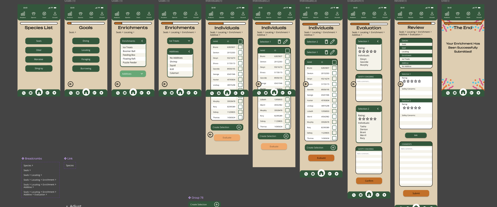

Fresno Chaffee Zoo Enrichment App (October-January)

We reached out to the Fresno Chaffee Zoo in which they needed an enrichment app that was simple to use. My class decided to redesign their enrichment, and we called it Zoologix. This project expanded from October to December, and later we refined it in January.
Tools Used
- Figma - wire-frames and UI design
- Paper wire-frames - early user flow sketches
- Collaborative design workflow
Experience
There were many tabs that zoo specialists needed to do in order to keep track of their animals. These zoo specialists asked us to make an app where they could:
- Log into enrichment
- Selecting goals
- Selecting animals
- Recording notes and ratings
Since this was a big project to finish by December, I contributed to a team of five people. We were assigned to work on log enrichment. My role for this project was being the lead lay designer, where I created the user flow and the step by step order of the log enrichment. The process of our work later advanced when our CART Showcase was held. Our group was nominated to showcase and present our work to judges, which we made it to third place.

Challenges
The biggest challenge throughout this project was organizing a complex workflow for zoo specialists who needed quick access to multiple animal records. To resolve this I created a step-by-step wireframe workflow and refined the layout in Figma to ensure the process felt intuitive and efficient. Most of this was solved because of working in a large team with lots of communication and organizing.
Habits of Mind
- Collaboration - worked in a team of five
- Communication - coordinated design decisions
- Leadership - served as lead layout designer
- Creativity - designed user flow and interface
Outcome & Reflecting
This was one of the biggest projects I have done so far with a lot of other people. The project was a fun experience and it helped me express a lot of my creativity and team collaboration. I was able to connect well with others, which advanced our way to get third place for our CART Showcase. Throughout this entire project, I learned how to draw wireframes on paper then transfer the idea to Figma, where we designed our work there. For an accomplishment my team and I got along pretty well.
You’ve reached the bottom! This is all I have for now. If you have any questions feel free to ask me!
 nylia.vang1@gmail.com
nylia.vang1@gmail.com